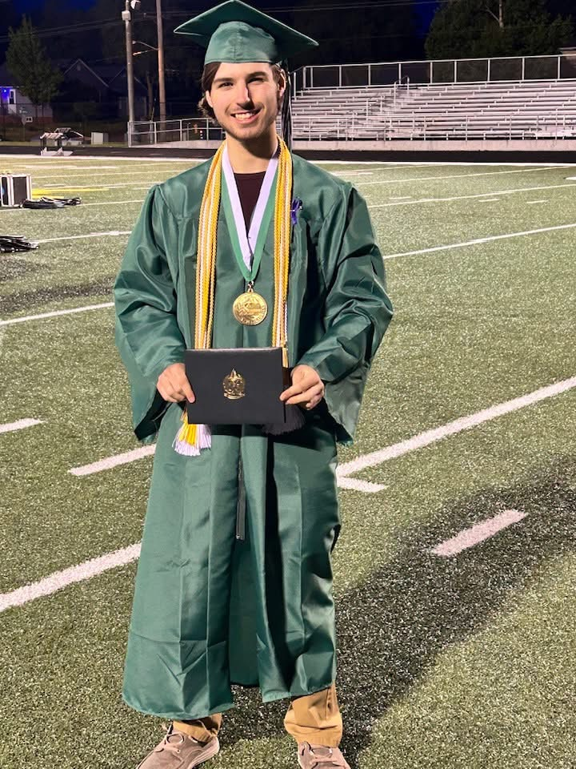
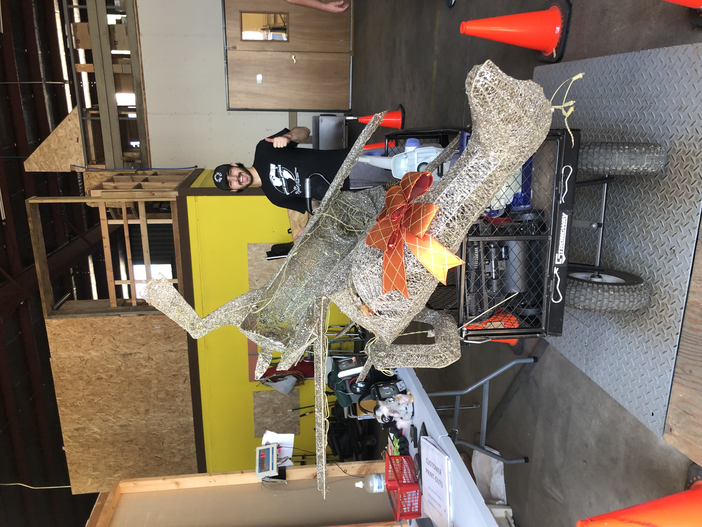

I am currently an undergraduate student at the University of Wisconsin-Madison studying computer science, data science, and biology. More specifically, I am on track to graduate with a B.S. in Computer Science, and a Certificate in Data Science. My academic interests include biological data-analytics through programming. My larger aspiration is to be accepted into a bio-computational master program, and work towards a career in research. Of my academic interests, I am most passionate about getting real scientific insights from messy biological data!
I grew up in Weston Wisconsin, around the middle of the state. I attended D.C. Everest High school, where I graduated as valedictorian. During my High School years, I committed a large amount of my time outside of classes volunteering in my community and learning to skateboard.

Programming projects are the center of my academic interests. Project design and implementation are big focuses of my education, and I work to use that to create code that tackles real world problems. I have worked largely with Python and R, but have experience with Java, HTML & CSS, and Javascript.
A major focus of modern day research is the implementation of Artificial Intelligence, and its ability to analyze data. This has been hugely beneficial, as seen with developments such as Google DeepMind’s AlphaFold, and has fundamentally pivoted the focus of much of today’s research. This new era of research has me invested in learning about biological machine learning and its possible applications.
The intersection of computer science and biology is a path that largely has to do with biological data, research, and development of tools. I take a broader approach to this field, as my skills are applicable to many research labs. From working with ecological fungi datasets to producing CNN models to process genomic data, I focus on learning the code and statistics being involved in the “dry lab” part of research.
Secure and complete one University undergraduate research position, paid or for credit, in a lab relation to computer science or bioinformatics by my graduation date. This would create the experience relating directly to the exact type of work I wish to pursue.
Achieve advanced proficiency in Python and R for scientific computing and bioinformatic research. I hope to complete three complex bioinformatic/biological data projects before my graduation date. This would be a test of my skills, and a learning experience far more hands-on than coursework.
Attend Biostatistics and Computational Biology related seminars at the University, network with professionals in these fields, and initiate meaningful connections. I want to attend at least one hackathon before my graduation. Pursuing these events would open the door for further networking opportunities, but also allow me to see what the scientific community is currently researching.
Put use my skills I learned to help solve real work data and biological problems. I hope to produce at least two projects that tackle real issues and have the potential to have an active user base before my graduation. Designing a project with the goal of solving a real problem would give me the experience of collaborating with others, and have a beneficial impact on a community!
Starting with Key Club in high school, I began volunteering at local places in my free time. My most frequent volunteering experience was with Good News Projects in Wausau. Since moving to Madison, I have volunteered at the nearby Period Garden and James Madison Park along with recently joining a cooking event at the Ronald Mcdonald Charity House
Currently, I have been involved with working with ecological data at the Damschen Research Lab, UW Madison Department of Integrative Biology. Using their ecological fungi data, I have created a research paper looking into if the effects of controlled burns changes depending on land-use histories, and presented it at the BIO152 2026 Undergraduate Symposium. Currently, I continue volunteering in the lab to aid in data collection and entry.
I am excited to say I have landed a long-term data scientist internship at the University of Wisconsin-Madison Campus and Visitor Relations. As a part of my job, I maintain our internal information database, report our numbers to the university, and analyze our collected contact data to improve our services to the University and its guests. My job includes working with tools such as google sheets, excel, canva, KnowledgeBase, etc. to more advanced Python and javascript applications.
As of summer 2026, I have worked alongside some colleagues to create the new registered student organization Badger Biodata Initiative. The club goal is to create a space for undergraduate students to learn and work with biological data through computational and programmable methods. Our club works to introduce students to biological computation while collaborating to create real coding projects. Badger Biodata also closely collaborates with BRUG, a new Community of Practitioners for R programming.
